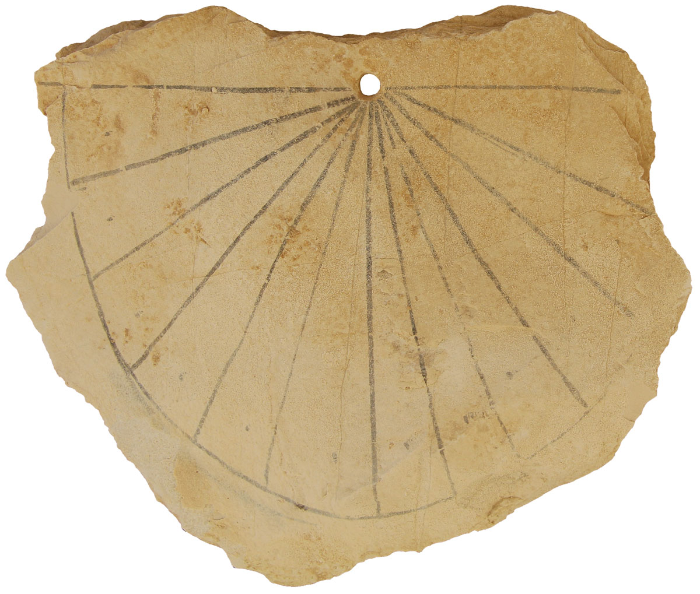
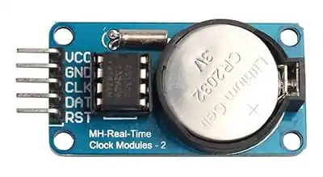

| Martius | 31 |
| Aprilis | 30 |
| Maius | 31 |
| Junius | 30 |
| Quintilis | 31 |
| Sextilis | 30 |
| September | 30 |
| October | 31 |
| November | 30 |
| December | 30 |
| Winter | ? |
| Ianuarius | 29 |
| Februarius | 28/23 |
| (Intercalary) | ? |
| Martius | 31 |
| Aprilis | 29 |
| Maius | 31 |
| Iunius | 29 |
| Quintilis | 31 |
| Sextilis | 29 |
| September | 29 |
| October | 31 |
| November | 29 |
| December | 29 |
| Ianuarius | 31 |
| Februarius | 28/29 |
| Martius | 31 |
| Aprilis | 30 |
| Maius | 31 |
| Iunius | 30 |
| Iulius | 31 |
| Augustus | 31 |
| September | 30 |
| October | 31 |
| November | 30 |
| December | 31 |
|
Thu, 4 October 1582 → Fri, 15 October 1582
| Year | Adopted | Days |
|---|---|---|
| 1582 | France (mostly), Italy, Poland, Portugal, Spain | 10 |
| 1583 | Austria, Germany (Catholic states) | 10 |
| ... | ||
| 1923 | Greece | 13 |
| 1927 | Turkey | 13 |
| Dies | Daeg | Day |
|---|---|---|
| Solii | Sunnan | Sun |
| Lunae | Monan | Mon |
| Martis | Tiwes | Tue |
| Mercurii | Wodan | Wed |
| Iovis | Thor | Thu |
| Veneris | Freya | Fri |
| Saturnii | Sætern | Sat |
|
 |
|
The duration of 9,192,631,770 periods of the radiation corresponding to the transition between the two hyperfine levels of the ground state of the caesium-133 atom. (1967)
TAI + 10s + 27s
day = 86400s (+ 1)
| Time Zone | Description | Offset |
|---|---|---|
| UTC | Coordinated Universal Time | UTC+00 |
| America/New_York | Eastern Time (US & Canada) | UTC-05 |
| America/Chicago | Central Time (US & Canada) | UTC-06 |
| America/Los_Angeles | Pacific Time (US & Canada) | UTC-08 |
| Europe/London | Greenwich Mean Time (UK) | UTC+00 |
| Europe/Brussels | Central European Time (Belgium) | UTC+01 |
| Asia/Dubai | Gulf Standard Time (UAE) | UTC+04 |
| Asia/Shanghai | China Standard Time | UTC+08 |
| ... | ||
Every day has 24 hours
Australia/Lord_Howe, April 2nd 2017Every non-DST day is 24 hours
In GMT a day is 24 hours
Greenwich observes British Summer Time
In UTC a day is 24 hours
Except if there is a leap second
DST transitions twice a year
Morocco, 2014
| March 30 | +1h |
| June 28 | –1h |
| August 2 | +1h |
| October 26 | –1h |
If you know the local time, you know the UTC time
With DST the same hour occurs twice
Every time between 0:00 and 24:00 is valid
With DST, some hours don't exist
Every date exists (in recent times)
Samoa, december 30th 2011
But at least we know what the rules are
In 2022 the IANA TZ database changed 7 times
Updates can take a year to propagate
We get proper notice of changes
Turkey, October 2015
DST rules change with 3 weeks notice.
The date libraries handle all of that
| UTC | + offset | = local time |
| 2017-11-24T11:00:00Z | +01:00 | 2017-11-24T12:00:00+01:00 |

RTC - milliseconds - discontinuous
Date.now()
HPET - nanoseconds - monotonic
window.performance.now()
VM clock drift
sets or slews the system clock
| Network | Accuracy |
|---|---|
| Internet | < 100 ms |
| Local | < 1 ms |
~ 100 nanoseconds
| Nov. 1971 | Unix 1st ed. | 32-bit signed, 60ths of a second |
| Nov. 1973 | Unix 4th ed. | 32-bit signed, seconds |
| 32 bit signed | 64 bit signed | |
|---|---|---|
| Epoch | Jan 1 1970, 00:00:00 UTC | |
| Earliest | Dec 13 1901 20:45:52 UTC | 292 billion BCE |
| Latest | Jan 19 2038 03:14:07 UTC | 292 billion AD |
| Pro | Con |
|---|---|
| 4 or 8 bytes | Y2K38 |
| UTC | No local time |
| Continuous | Seconds |
| Pro | Con |
|---|---|
| Precise | Storage size |
| Zoned time | Math is hard |
| ISO standard | Many variations |
| Temporal | Moment | Day.js | date-fns | |
|---|---|---|---|---|
| Immutable | ✅ | ❌ | ✅ | ✅ |
| Time zone support | ✅native | ✅via plugin | ❌ | ✅via 'tz' |
| Durations | ✅ | ✅ | ✅ | ✅ |
| Calendar support | ✅ | ❌ | ❌ | ❌ |
| Strict ISO parsing | ✅ | ❌ | ❌ | ✅ |
| Native in JS | ✅ | ❌ | ❌ | ❌ |
| Preferred | Fallback | |
|---|---|---|
| "Now" | Database time | Server time |
| SQL | timestamp with time zonedatetimeoffset |
ISO 8601 varchar
|
| JavaScript | Temporal | Date |
| .NET | NodaTime | DateTimeOffset |
| Java | java.time.* | java.util.Date |
| Python | pendulum | datetime+pytz |